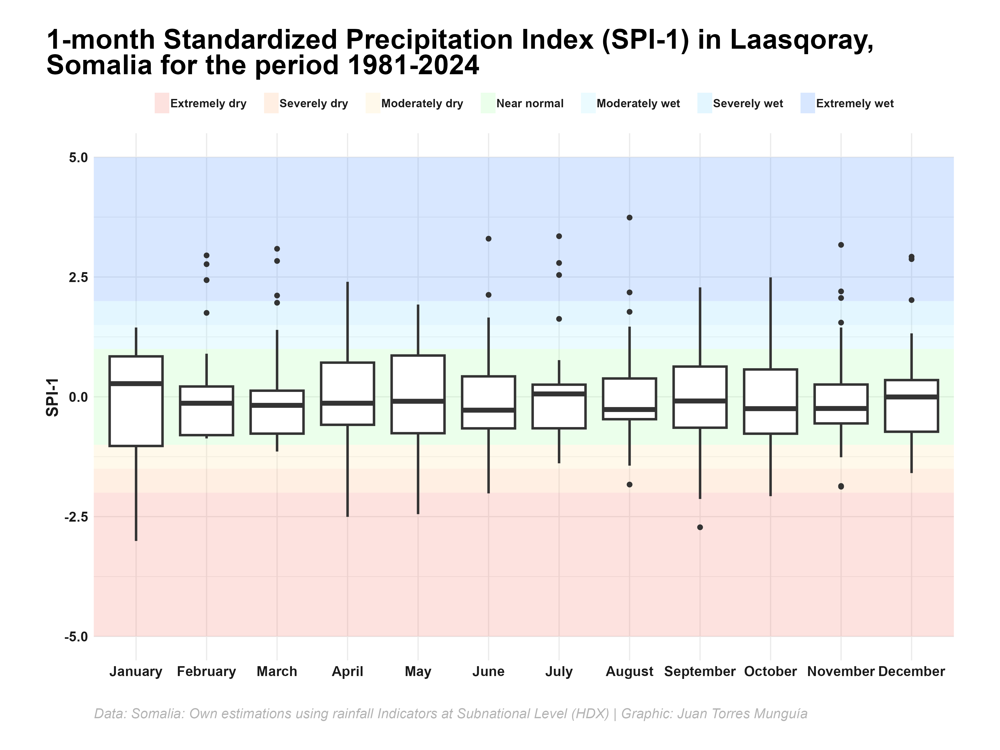

library(tidyverse) # For data manipulation and visualization
library(SCI) # For Standardized Precipitation Index calculations (climate analysis)
library(conflicted) # For resolving conflicts between function names in different packages
library(kableExtra) # Create HTML table
library(ggplot2) # Create plots
library(ggtext) # Use rich text elements in ggplot
library(showtext) # Add custom fonts to plots
conflicts_prefer(dplyr::select) # Prefer 'select' function from dplyr package
conflicts_prefer(dplyr::lag) # Prefer 'lag' function from dplyr package
conflicts_prefer(dplyr::filter) # Prefer 'filter' function from dplyr packageHow to compute and visualize the Standardized Precipitation Index (SPI) for drought analysis
Part 1: A step-by-step guide to calculate the SPI with the {SCI} package in R using data from Somalia at subnational level
data analysis
drought
tidyverse
ggplot2
box plots
SCI
Standardized Precipitation Index (SPI)
Somalia
Overview
The Standardized Precipitation Index (SPI) is a widely used drought index that provides a measure of precipitation anomalies relative to the long-term average. The SPI is calculated for different time scales (e.g., 1, 3, 6, 12 months) and can be used to monitor drought conditions, assess drought severity, and support drought early warning systems, as it provides a standardized measure of precipitation anomalies that can be compared across districts and time periods.
In this tutorial, we will walk through the process of calculating the SPI for Somalia at the subnational level using the {SCI} package in R.
About the data
The rainfall dataset used in this tutorial comes from the Humanitarian Data Exchange (HDX) initiative of the United Nations Office for the Coordination of Humanitarian Affairs (OCHA) and provides monthly precipitation data for Somalia’s subnational districts. It is derived from CHIRPS v2 (Climate Hazards Group InfraRed Precipitation with in situ Station data), using satellite imagery combined with ground-based observations.
For each 10-day period (dekad), the dataset includes the following indicators:
rfh: Total rainfall (mm) over 10 daysr1h: 1-month rolling rainfall sum (mm)r3h: 3-month rolling rainfall sum (mm)rfh_avg: Long-term average rainfall for the dekad (mm)r1h_avg: Long-term average for 1-month rolling rainfall (mm)r3h_avg: Long-term average for 3-month rolling rainfall (mm)rfq: Rainfall anomaly (%)r1q: Rainfall anomaly (%)r3q: 3-month rainfall anomaly (%)
The data is aggregated at the subnational level and follows administrative boundaries defined by the World Food Programme (WFP), with each unit assigned a unique code (Pcode).
Set-up
Before we begin, we need to install and load the necessary R packages. We will be using the {tidyverse} package for data wrangling, as well as the {SCI} package for calculating the SPI.
Warning
Important to use {conflicted} package to specify preferred functions to avoid naming conflicts between {tidyverse} and {SCI} packages.
Loading data HDX
Data can be found here in file som-rainfall-adm2-full.csv. For Somalia, data is available from January 1981.
# Read the rainfall data for Somalia`
# You can also download the data from the HDX platform and read it locally
rainfall_data <- read.csv("https://data.humdata.org/dataset/ed6e1b4b-8094-47e6-bdf7-f6d56fa7abb9/resource/331ab214-0860-44ea-a53b-0a3fac601e82/download/som-rainfall-adm2-full.csv")Data wrangling
We preprocess the data to extract relevant information to calculate the SPI. We extract the year and month from the date column, calculate the rainfall anomaly, and group the data by year, month, and district_code.
rainfall_data <- rainfall_data |>
slice(-1) |> # Remove the first row (metadata)
mutate(
year = year(date), # Extract year from the 'date' column
month = month(date), # Extract month from the 'date' column
district_code = ADM2_PCODE # Rename the 'ADM2_PCODE' column to 'district_code'
) |>
filter(year < 2025) |> # Filter data up to 2024
rename(
rainfall_monthly_total = rfh, # Rename the column 'rfh' to 'rainfall_monthly_total'
rainfall_monthly_lt_average = rfh_avg # Rename the column 'rfh_avg' to 'rainfall_monthly_lt_average'
) |>
mutate(
rainfall_monthly_total = as.numeric(rainfall_monthly_total), # Convert rainfall total to numeric
rainfall_monthly_lt_average = as.numeric(rainfall_monthly_lt_average) # Convert long-term average to numeric
) |>
select(year, month, district_code, rainfall_monthly_total, rainfall_monthly_lt_average) # Select relevant columns
# Group by year, month, and district_code, and calculate mean rainfall values by district
rainfall_data <- rainfall_data |>
group_by(year, month, district_code) |>
summarise(
rainfall_monthly_total = mean(rainfall_monthly_total, na.rm = TRUE), # Calculate the mean of rainfall total
rainfall_monthly_lt_average = mean(rainfall_monthly_lt_average, na.rm = TRUE) # Calculate the mean of long-term average
) |>
ungroup() |>
# Optionally, you can calculate rainfall anomaly as a percentage of the long-term average
# rainfall_anomaly = 1, indicates no anomaly
# < 1 indicates below average
# > 1 indicates above average
mutate(
rainfall_anomaly = rainfall_monthly_total / rainfall_monthly_lt_average
)We then calculate the SPI for different time scales (1, 3, 6, 12 months).
rainfall_data <- rainfall_data |>
group_by(district_code) |> # Group by district_code
mutate(
spi1 = transformSCI(
rainfall_monthly_total,
first.mon = 1, # Start month for SPI calculation
obj = fitSCI(rainfall_monthly_total,
first.mon = 1, # Start month for SPI calculation
time.scale = 1, # Time scale for SPI calculation
distr = "gamma", # Distribution for fitting
p0 = TRUE # Use initial parameter estimates
)
),
spi3 = transformSCI(
rainfall_monthly_total,
first.mon = 1,
obj = fitSCI(rainfall_monthly_total,
first.mon = 1,
time.scale = 3,
distr = "gamma",
p0 = TRUE
)
),
spi6 = transformSCI(
rainfall_monthly_total,
first.mon = 1,
obj = fitSCI(rainfall_monthly_total,
first.mon = 1,
time.scale = 6,
distr = "gamma",
p0 = TRUE
)
),
spi12 = transformSCI(
rainfall_monthly_total,
first.mon = 1,
obj = fitSCI(rainfall_monthly_total,
first.mon = 1,
time.scale = 12,
distr = "gamma",
p0 = TRUE
)
)
) |>
ungroup() |>
arrange(district_code)The output table looks like this:
| year | month | district_code | rainfall_monthly_total | rainfall_monthly_lt_average | rainfall_anomaly | spi1 | spi3 | spi6 | spi12 |
|---|---|---|---|---|---|---|---|---|---|
| 1981 | 1 | SO1101 | 0.9417333 | 1.744867 | 0.5397165 | -1.1043897 | NA | NA | NA |
| 1981 | 2 | SO1101 | 2.0194333 | 2.027633 | 0.9959559 | 0.1537179 | NA | NA | NA |
| 1981 | 3 | SO1101 | 32.8349667 | 9.696967 | 3.3861070 | 2.0618329 | 2.0528624 | NA | NA |
| 1981 | 4 | SO1101 | 18.3139000 | 24.722233 | 0.7407866 | -0.3498790 | 0.9691425 | NA | NA |
| 1981 | 5 | SO1101 | 6.7928667 | 17.754700 | 0.3825954 | -1.1682135 | 0.3442811 | NA | NA |
| 1981 | 6 | SO1101 | 2.7443667 | 4.763233 | 0.5761563 | -1.1812491 | -1.5029868 | 0.1547485 | NA |
| 1981 | 7 | SO1101 | 17.3592333 | 14.047767 | 1.2357290 | 0.7686622 | -0.9047071 | 0.3837349 | NA |
| 1981 | 8 | SO1101 | 34.8381667 | 26.758133 | 1.3019655 | 0.8281642 | 0.7648521 | 0.7381726 | NA |
| 1981 | 9 | SO1101 | 29.1683000 | 19.003000 | 1.5349313 | 1.2521209 | 1.2301335 | 0.0193033 | NA |
| 1981 | 10 | SO1101 | 4.1974333 | 8.226200 | 0.5102518 | -0.3816687 | 0.7653220 | 0.1559546 | NA |
Interpretation
Drought events are indicated by negative SPI values, with more negative values indicating more severe drought conditions. Conversely, positive SPI values indicate wetter-than-average conditions. For demonstrating purposes, let’s visualize the SPI values for Laasqoray district in Sanaag region. One efficient way to visualize SPI values is by using a box plot with SPI categories.
# Custom theme for the chart
theme_boxplot_chart <- function() {
theme_minimal(
base_family = "Roboto Condensed" # Base theme with custom font
) +
# Custom theme settings
theme(
# Axis settings
axis.title = element_text(
color = "grey10",
face = "bold",
size = 14
),
axis.text = element_text(
color = "grey10",
face = "bold",
size = 12
),
# Title settings
plot.title.position = "plot", # Position of the title
plot.title = element_textbox(
color = "black",
face = "bold",
size = 24,
margin = margin(5, 0, 5, 0), # Top, right, bottom, left
width = unit(1, "npc") # Width of the title, npc == 1 corresponds to the full width of the plot
),
# Legend settings
legend.position = "top",
legend.title = element_blank(),
legend.key.height = unit(0.5, "cm"), # Height of the legend key
legend.key.width = unit(0.5, "cm"), # Width of the legend key
legend.spacing.x = unit(0.2, "cm"),
legend.key.spacing = unit(0.5, "cm"), # Spacing between legend keys
legend.text = element_text(
margin = margin(5, 0, 5, 0),
face = "bold",
color = "grey10",
size = 10
),
legend.direction = "horizontal",
legend.byrow = FALSE,
# Caption settings
plot.caption = element_textbox(
color = "grey70",
face = "italic",
size = 12,
margin = margin(10, 0, 5, 0),
width = unit(1, "npc")
),
plot.background = element_rect(
color = "white",
fill = "white"
),
plot.margin = margin(20, 40, 20, 40)
)
}
# Title, subtitle, and caption for the boxplot chart
title_chart <- "1-month Standardized Precipitation Index (SPI-1) in Laasqoray, Somalia for the period 1981-2024"
caption_chart <- "Data: Somalia: Own estimations using rainfall Indicators at Subnational Level (HDX) | Graphic: Juan Torres Munguía"
#
spi_colors <- data.frame(
ymin = c(-5, -2, -1.5, -1, 0, 1, 1.5, 2),
ymax = c(-2, -1.5, -1, 0, 1, 1.5, 2, 5),
label = factor(
c(
"Extremely dry", "Severely dry", "Moderately dry", "Near normal",
"Near normal", "Moderately wet", "Severely wet", "Extremely wet"
),
levels = c(
"Extremely dry", "Severely dry", "Moderately dry", "Near normal",
"Moderately wet", "Severely wet", "Extremely wet"
)
),
fill = c(
"#F76D5E", "#FFAD72", "#FFE099", "#99FF99",
"#99FF99", "#99EAFF", "#75D3FF", "#3D87FF"
)
)
rainfall_data |>
filter(district_code == "SO1503") |>
mutate(month = factor(month, levels = 1:12, labels = month.name)) |> # Convert month to factor
ggplot(aes(x = month, y = spi1)) +
# Add box plot with SPI categories
geom_rect(
data = spi_colors, aes(ymin = ymin, ymax = ymax, xmin = -Inf, xmax = Inf, fill = label),
alpha = 0.2, inherit.aes = FALSE
) +
geom_boxplot(size = 1, outlier.size = 2, outlier.shape = 16) +
scale_fill_manual(values = setNames(spi_colors$fill, spi_colors$label)) +
labs(
title = title_chart,
caption = caption_chart,
x = "",
y = "SPI-1",
fill = ""
) +
guides(fill = guide_legend(nrow = 1)) + # Number of rows in the legend
theme_boxplot_chart()showtext_opts(dpi = 320) # Set the resolution of the image 320 dpi is for high-quality images ("retina")
ggsave(
"spi-somalia.png",
dpi = 320,
width = 12,
height = 9,
units = "in"
)
showtext_auto(FALSE) # Turn off the showtext functionality
Juan TORRES MUNGUÍA | HUMANITARIAN DATA SCIENTIST - How to compute and visualize the Standardized Precipitation Index (SPI) for drought analysis Juan TORRES MUNGUÍA | HUMANITARIAN DATA SCIENTIST - How to compute and visualize the Standardized Precipitation Index (SPI) for drought analysis Juan TORRES MUNGUÍA | HUMANITARIAN DATA SCIENTIST - How to compute and visualize the Standardized Precipitation Index (SPI) for drought analysis Juan TORRES MUNGUÍA | HUMANITARIAN DATA SCIENTIST Part 1: A step-by-step guide to calculate the SPI with the {SCI} package in R using data from Somalia at subnational level Part 1: A step-by-step guide to calculate the SPI with the {SCI} package in R using data from Somalia at subnational level